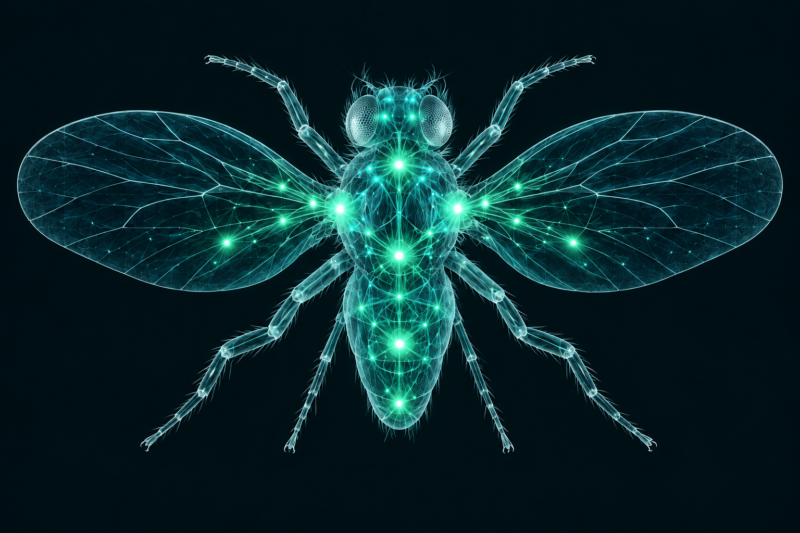

Created by Tomislav Rupic · Pixel Records
Fruitfly Acid uses an 80-neuron, 1,296-edge extract of measured MaleCNS v1.0 connectivity. Simplified rate dynamics and musical inputs are designed for this instrument. The fly silhouette is illustrative; the animated graph uses real node positions and edges.
Learning changes a 210-weight musical output layer. The measured wiring stays fixed. Feed MIDI learns quantized monophonic patterns; chords use the lowest onset note and pitches map to the chosen scale. More like this reinforces the current pattern. Training loss measures fit, not musical quality. No biological learning claim.
Data: FlyEM / HHMI Janelia, Cambridge, MRC LMB and Google Research, MaleCNS, CC BY 4.0. Circuit selection by Mert Cobanov / Fly Dino. Only the data extract is reused; application code and illustration are original. See pinned provenance.
Inspired by Iftah’s Sting and Fly Lab. All processing stays in your browser. Session data is saved locally; export a session file for a portable backup.
Space: play/stop · G: generate · Escape: stop. Sliders support arrow keys. MIDI output depends on browser support. Prefer Brave or Chrome for hardware MIDI.